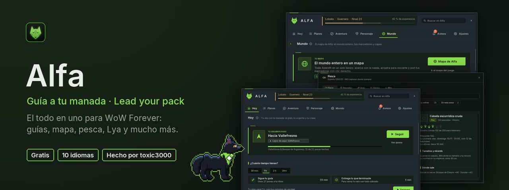
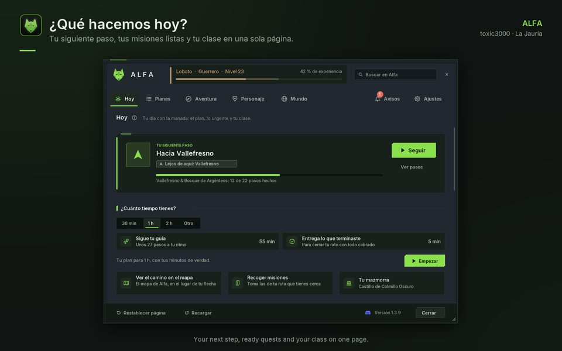
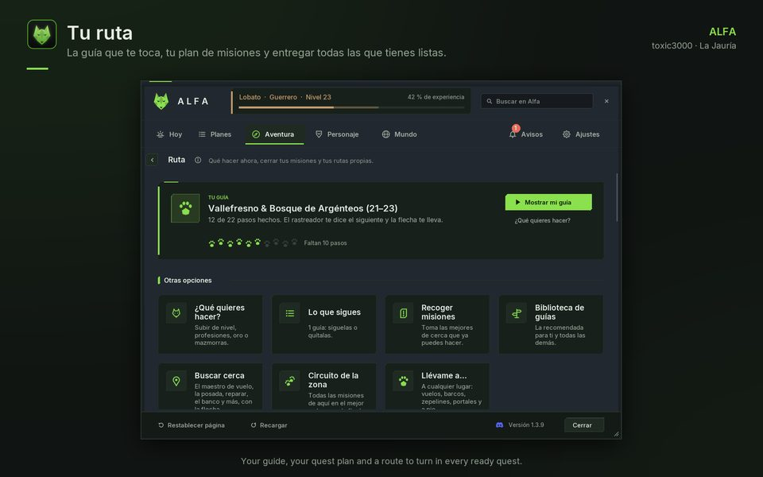
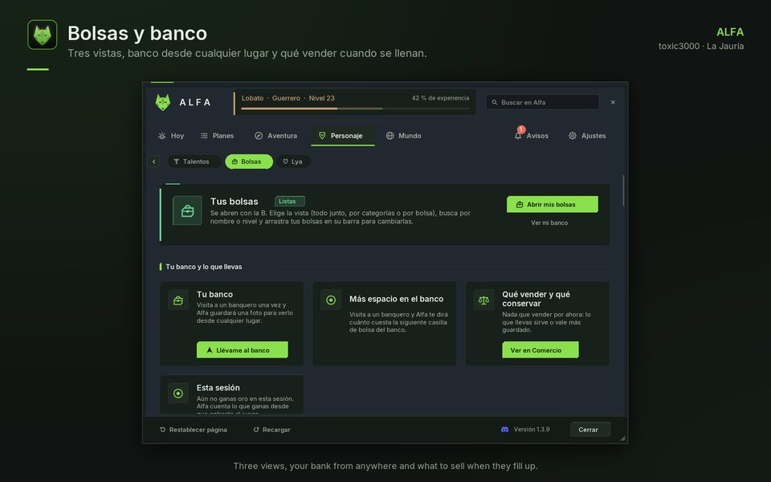
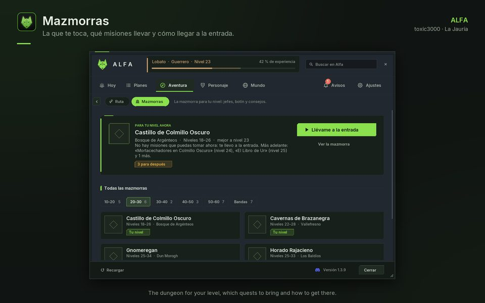

Guides and route
An arrow that leads you to every quest, the best route per zone and your progress always in sight.

One addon instead of twenty for World of Warcraft: Forever. Tidy, guided, with one look, and with Lya, a black she-wolf who keeps you company along the way.
Alfa brings into one window what you would normally do with many addons, and tells you what's worth doing right now. All with the same look and without cluttering your screen.
An arrow that leads you to every quest, the best route per zone and your progress always in sight.
What's near you, rares, dangers and places to discover, on Alfa's map.
Bags sorted into sections, search, gear upgrades and what's worth selling.
Before you go in, a checklist that ticks itself; inside, a map with your progress through the bosses.
Profession guides by stage, fishing with its own journal and your sales made easy.
Your guild together: who's going where, meetups, shared rares and a scoreboard by faction.
Lya is the black she-wolf who keeps you company. She tells you the lore of the zone, your quests, your race and your professions, gives you tips and celebrates every level with you. And yes: she loves sausages.
The version that closes the 1.3 series: faster, more polished and with a few surprises.
Alfa loads only the guides for your levels and leaves the rest for when you ask: you get in sooner and the game runs lighter.
The dual-monitor mode, redone and much better: big panels you can read from afar, a preview before applying it and back to normal in one click.
Your adventure since you started using Alfa in one lovely window: levels, quests, dungeons, fish, gold, records and your moments with Lya.
More stories for every zone and quest, and memories of what you've been through together.
If you like, Alfa dresses in your faction: its colours, its emblem and its trims in every window, in Today and in the announcements.
The numbers on your slots always look the same size, never overlapping, even after you reset your settings.
Your session at a glance (time, experience per hour and gold earned) and the bell's notifications sorted by day.
Close any Alfa window with Esc, see each button's shortcut and find any setting even if you search for it in other words.
This is just a taste. The full list is in the release notes (CHANGELOG).
This is how Alfa looks in the game. Tap an image to see it full size.










Alfa's manual as a PDF, with everything explained page by page, in your language.
Install it from CurseForge or grab the zip (and the Windows installer) of the latest version on GitHub. Questions, ideas or a bug? We're waiting for you on La Jauría's Discord.